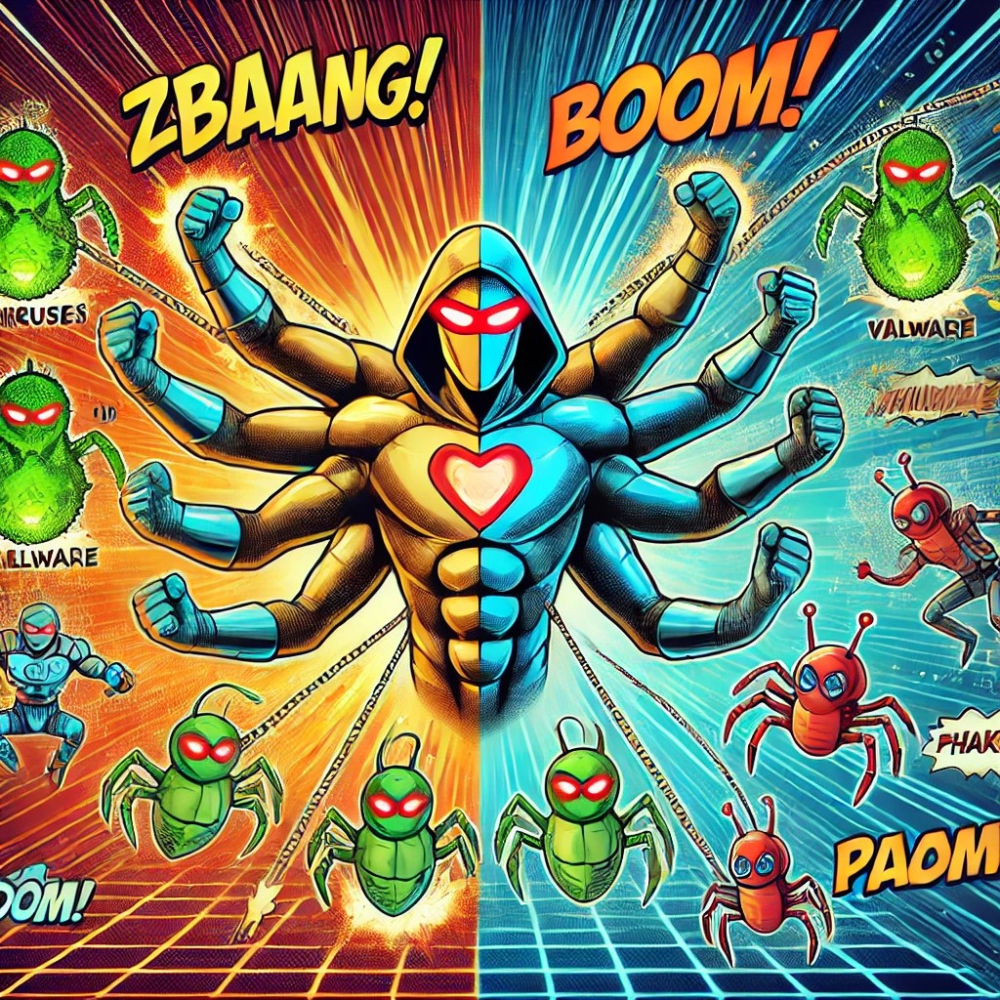

Confidential
🚀 The Problem
Current endpoint protection (EPP) protects devices directly. If it fails, the endpoint is immediately infected. For example:
- A secretary clicks on a link in an email containing an unknown-unknown threat.
- The EPP fails to recognize the threat, and the endpoint is compromised.
This single-layer approach is no longer sufficient in a world of sophisticated cyberattacks.
🛡️ Our Revolutionary Solution
We offer a virtual world inside another virtual world, creating additional protective layers:
- Double Virtualization: Ubuntu 24.04 running in WSL, with LXC inside Ubuntu, adds two layers of defense before any infection can spread.
- Countless Digital Twins: Virtual replicas of infrastructure and application stacks for testing, simulation, and breach containment.
- Unlimited Layers: Create as many layers of protection as needed without impacting latency or application performance.
This approach changes the game: threats are detected and stopped within virtual layers, keeping the endpoint safe.

🌐 Supported Platforms
Our solution seamlessly integrates with all major platforms:
- Cloud Platforms: GCP, AWS, MS Azure, IONOS, GCORE, OVH, or any other.
- Virtualization Platforms: VMware, Proxmox, OpenStack, Open Nebula.
- Operating Systems: Windows 10-11 and Ubuntu.
🔮 Future Roadmap
We are continuously innovating to ensure our solution stays ahead of evolving threats. Our roadmap includes:
- AI-Driven Investigation: Deploy AI to explore dark web marketplaces for unknown vulnerabilities (CVE acquisition) and test them against the customer’s digital twin landscape using Infection Monkey.
- Gamified Loot Box Platform: Create an anonymized platform connecting red teams, pen testers, and ethical hackers to continuously attack and test the digital twin of the customer. The gamified system will incentivize exploration of breach and attack vectors in a controlled, simulated environment.
- Support for Android Endpoint Devices: Extend protection capabilities to Android devices, bringing full endpoint security for mobile environments.
- Collaborative Defense Network: Build a shared anonymized database of attack strategies and mitigations, allowing all customers to benefit from collective defense intelligence.
🔍 Why Our Approach is Revolutionary
- Proactive Security: Threats are detected and mitigated before they reach the endpoint.
- Scalable Protection: Supports enterprises with 10,000+ endpoints, scaling effortlessly with automation.
- Digital Twin Capability: Simulates real-world environments for breach and attack testing.
- AI-Driven Threat Testing: Connects AI to acquire and test unknown vulnerabilities, ensuring comprehensive protection.
💸 Cost Savings
Expected savings with our solution:
- License Costs: Save up to 80% by replacing proprietary tools.
- Operational Costs: Reduce manual labor with automation.
- Infrastructure Costs: Leverage existing infrastructure with open-source tools.
🛠️ Redundant Products
Our solution makes the following products redundant:
- Traditional Firewalls (e.g., Palo Alto, Fortinet).
- Endpoint Protection (e.g., Symantec, McAfee).
- SIEMs (e.g., Splunk, IBM QRadar).
- Malware Detection Tools (e.g., CrowdStrike, SentinelOne).